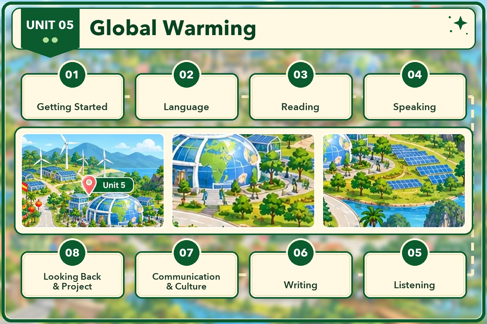

Lesson 1 · Getting started — A presentation about global warming Lesson 2 · Language Lesson 3 · Reading: The UN Climate Change Conference Lesson 4 · Speaking: Human activities and global warming — chưa có bài giảng Lesson 5 · Listening: Black carbon and global temperature — chưa có bài giảng Lesson 6 · Writing: A leaflet to reduce black carbon emissions — chưa có bài giảng Lesson 7 · Communication and Culture / CLIL: Reducing the environmental impact of farming — chưa có bài giảng Lesson 8 · Looking back and Project: How local people limit global warming — chưa có bài giảngĐã dựng: Lesson 1, 2, 3. 5 thẻ còn lại đang khoá. Dựng xong tiết nào thì mở khoá thẻ đó.